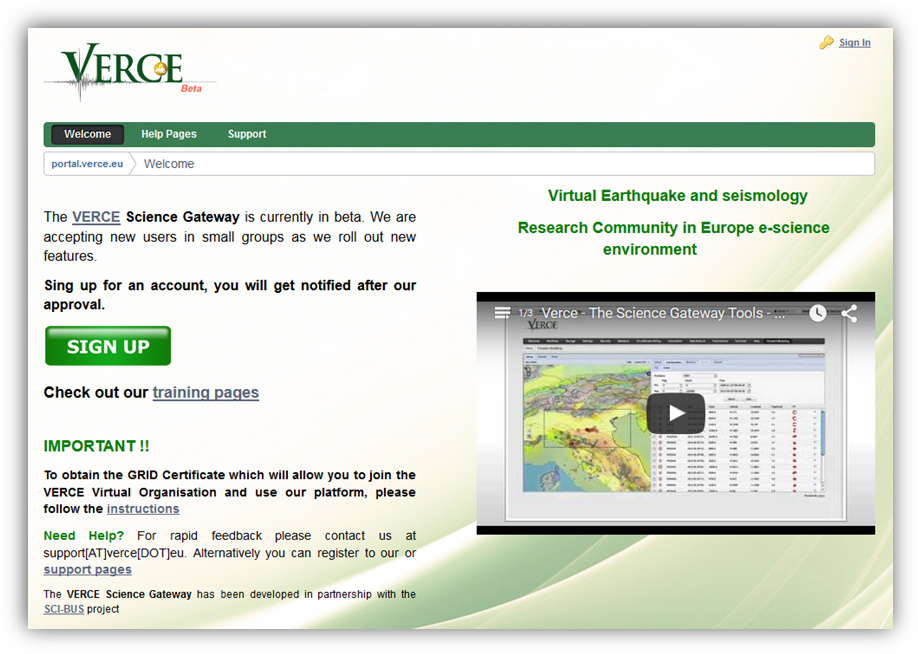
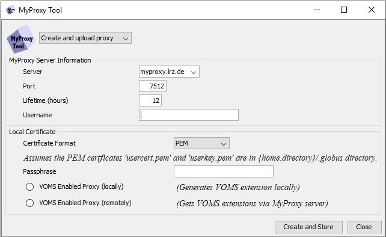
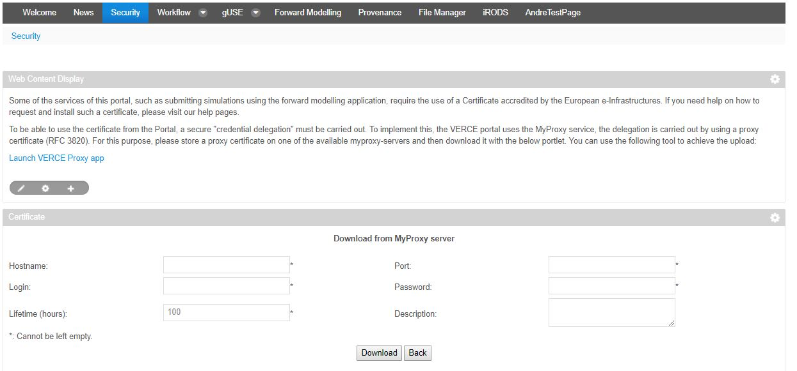
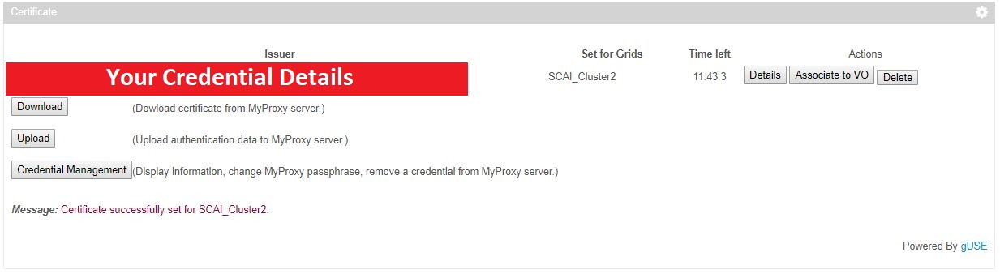
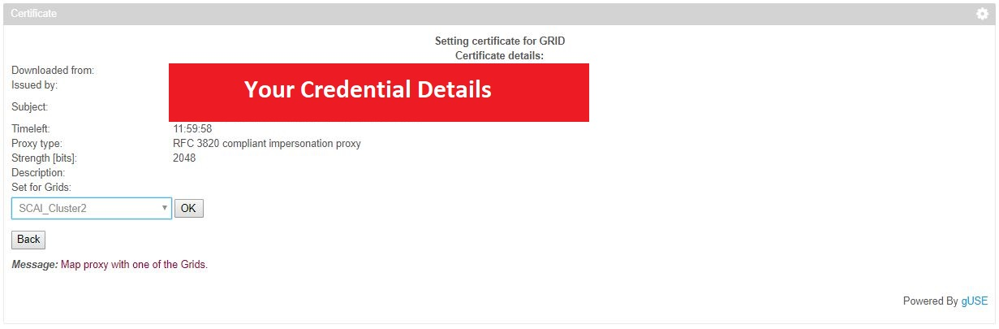

3. Registering for the platform and certification¶
The VERCE platform can be accessed through a normal web browser. The portal has been well tested with browsers such as Mozilla Firefox and Safari, and should also work with Google Chrome. At this stage the portal doesn’t support Internet Explorer or Microsoft Edge.
3.1 Registering for the platform¶
Registering for the portal is exceptionally easy. Simply go to the VERCE portal website on the link below and click the icon. Fill in your details ensuring that you use your university email address (i.e. your academic email address) if at all possible. This can take one or two working days to be processed so please leave yourself time for this.

Figure 3.1: The VERCE sign up page
3.2 Getting a certificate¶
In addition to registering for the platform you must also get an e-science certificate from the relevant authority. This is an internationally recognised certification scheme that will allow you to submit simulations to a wide range of supercomputers. Without an e-science certificate you will be able to log into the portal website, but you will not be able to submit jobs to any of the super computers, or access any data through the portal.
The procedure for getting an e-science certificate depends on the where you are based as the e-science certificates are distributed by national certification authorities. First you must request an e-science certificate from your national provider, following the instructions on the relevant website:
- For the UK: http://www.ngs.ac.uk/ukca/certificates
- For Germany: https://pki.pca.dfn.de/grid-root-ca/cgi-bin/pub/pki?RA_ID=101
- For the Netherlands: http://ca.dutchgrid.nl/
- For France: https://igc.services.cnrs.fr/GRID2-FR
- For Italy: http://security.fi.infn.it/CA
You then have to go to an administrator (usually in your university) who confirms who you are, and (hopefully) approves the certificate. This can also take a day or two, so please leave time for this.
It is important to back up this certificate in a different location to the host computer (i.e. the computer that you used to request and download the certificate). Your local certificating authority will provide full details of how to do this.
3.3 Installing your certificate in your browser¶
To make the next stages of registration easier it is recommended that the users install their new certificate to the browser. Ideally this should be done on the computer you are most likely to be using the VERCE portal from. The certificate must first be exported from the certificate manager (see instructions from your national certificating authority). Both the ‘Private Key’ and the Certificate should be exported in ‘PKCS#12’ format. The certificate is exported to the local machine, and is protected with a new password.
To install the certificate on Mozilla you must first select ‘Options/Preferences’ from the menu button () in the top right of the browser. Select the ‘Advanced’ tab from the left-hand panel and then the ‘Certificates’ tab under the ‘Advanced’ menu. Finally select ‘View Certificates’ and click ‘Import’ to upload your certificate from its location on your local machine using the new password set when exporting the certificate.
Other browsers can be used (see start of section for browser options), but the procedure for uploading the certificate will vary. You must then ensure that you use this browser for the validation steps outlined below, and ideally when you log in to the portal.
3.4 Registering for super computing and data resources¶
The VERCE portal and iRODS are currently hosted by the ‘SCAI Fraunhofer’ supercomputer, in Germany.
To register for SCAI and iRODS, please send the information listed below to André Gemünd (andre.gemuend@scai.fraunhofer.de) at SCAI Fraunhofer, and request to be registered for the VERCE portal. André will be able to give you an account on ‘SCAI’ and ‘iRODS’ that will allow you to calculate and manage waveforms respectively. ‘iRODS’ is a suite of data management software that is embedded within the VERCE platform, and allows you to easily access your data regardless of where you submitted your simulation.
- First Name
- Last Name
- Nationality
- Affiliation
- Professional Address (including country)
- Telephone Number
- Email address
- Certificate DN (distinguished name, also called subject) of your certificate
3.5 Creating and uploading proxy certificates¶
Once you have got your national e-science certificate, you will need to load a proxy certificate up to the portal to allow you to access data and submit jobs to the available supercomputers. A proxy certificate is essentially a copy of the full certificate that will expire after a short time period (usually 24 hours). This allows you to upload and use your certificate, while the limited life span of the proxy minimises the risk of the certificate falling into the wrong hands.
Currently you can create a Proxy certificate using either the GSISSH_Term tool or the command line MYPROXY tools, both described below. We hope to provide a proxy certificate tool in the near future.
3.5.1 MYPROXY Tools¶
To run simulations on the VERCE Portal it is necessary to have stored your credentials (a proxy certificate) in a MyProxy repository so that it’s available for download through the portal when needed. To create a proxy certificate, you need to have a user certificate (from your national provider, listed above) and a private key file (with a .PEM format).
If your certificate is in p12 format, the relevant certificate format and private key file can be created as below. Run the following commands in the command line:
openssl pkcs12 -clcerts -nokeys -out usercert.pem -in cert.p12
openssl pkcs12 -nocerts -out userkey.pem -in cert.p12
The above commands should generate the files usercert.pem and userkey.pem. Once this is done then to protect your keys you would need to run the following commands:
chmod 644 usercert.pem
chmod 400 userkey.pem
Before you could use the below proxy tools you will need first to perform the following:
Create a “. globus” folder in your home directory and then copy the files usercert.pem and userkey.pem to this particular folder
Install Java Runtime Environment (JRE) 1.7 or higher
For the GSISSH_term tool you should also do the following steps:
Download the “Java Cryptography Extension (JCE) Unlimited Strength Jurisdiction Policy Files”
Extract the two jar files, “local_policy.jar” and “US_export_policy.jar”, and copy them to {JRE_HOME}/lib/security
3.5.1.1 GSISSH_Term Tool¶
The GSISSH_Term is a Java based application supported on most platforms. It is currently available for download on https://www.lrz.de/services/compute/grid_en/software_en/gsisshterm_en/ and can be installed either as a desktop application or as a Java webstart application.
To run GSISSH-Term as a Java webstart application, you need to have Java webstart (javaws) installed on your machine. This should already be included in the Java Runtime Environment (JRE) for Java SE 7.
Once the GSISSH-Term application has ran successfully then you can launch “MyProxy Tool” by selecting “MyProxy Tool” option from the “Tools” menu. A new popup window should appear as shown Figure 3.5.1.1.

Figure 3.5.1.1: Launching MyProxy Tool on GSISSH_Term application.
With MyProxy Tool you can upload, check and remove your credential to/from a MyProxy server. The tool also supports the generation and upload of voms-enabled proxy.
To create and store a proxy certificate in a MyProxy server, do the following steps:
- Launch MyProxy Tool on a machine where your Grid credentials are located.
- Select “Create and upload proxy” from the dropdown list.
- In the “MyProxy Server Information” panel enter:
- a URL of MyProxy server,
- a port number to connect to MyProxy server,
- a lifetime span for your proxy certificate and
- a username you could use later to retrieve or download your credentials from MyProxy server.
- In the “Local Certificate” panel:
- choose your certificate format from the dropdown list,
- for PEM format as mentioned above place both usercert.pem and userkey.pem in a folder named “.globus” which should be located within your home directory.
- For passphrase enter your grid-proxy passphrase.
- Click on the “Create and Store” button.
- Once the connection to MyProxy server has been established then you will be prompted to enter a new passphrase which you will need to use later along with other details to access your credentials on MyProxy server. It is recommended to use a passphrase that is different to your grid-proxy passphrase
3.5.1.2 MYPROXY command line tool¶
The MYPROXY tools can then be installed as by running the following commands in the command line of a Linux or mac machine:
sudo apt-get install myproxy
sudo apt-get install voms-clients
Installing the packages below will allow you to manage your certificate (from your national certificating authority). More details on this are given at https://wiki.egi.eu/wiki/EGI_IGTF_Release. To install the relevant packages:
Add the following line to your dpkg sources (sources.list file):
#### EGI Trust Anchor Distribution #### deb http://repository.egi.eu/sw/production/cas/1/current egi-igtf core
Run the following to add the EUGridPMA PGP key:
sudo wget -q -O –`https://dist.eugridpma.info/distribution/igtf/current/GPG-KEY-EUGridPMA-RPM-3\| <https://dist.eugridpma.info/distribution/igtf/current/GPG-KEY-EUGridPMA-RPM-3|>`__ sudo apt-key add –
Populate the cache and install the meta-package
sudo apt-get update sudo apt-get install ca-policy-egi-core
To store a credential in the MyProxy repository, run the myproxy-init command on a computer where your Grid credentials are located. For example:
myproxy-init -s myproxy.lrz.de
This will prompt you for your grid-proxy passphrase and then for a new passphrase for accessing your credentials from the MyProxy server. It is recommended to use a passphrase that is different to your grid-proxy passphrase.
By default, MyProxy uses your local Unix username to store your credentials and the proxy certificate is stored for 7 days in the MyProxy server. However, you can change this and register a proxy certificate for a specific number of hours using the -c option.
For example, running the following command will register a proxy certificate for 2 hours
myproxy-init -c 2 -s myproxy.lrz.de
To download your certificate, go to the ‘Security’ tab on the VERCE Portal and click on the ‘Download’ button under the ‘Certificate’ panel then under ‘Hostname’ enter the MyProxy server (e.g. myproxy.lrz.de) and your MyProxy username and passphrase. This is described in more detail in section 3.5.2 (below).
For more details of MyProxy commands, see
http://toolkit.globus.org/toolkit/docs/4.0/security/myproxy/user-index.html
3.5.2 Uploading a proxy certificate to the VERCE platform¶
Once you have created you proxy certificate using one of the methods above, you need to load the certificate into the VERCE platform in order to be able to submit jobs and access the data.
To do this you need to go to the ‘Security’ page. On this page click the button which will display the proxy certificate upload panel as shown below in Figure 3.5.

Figure 3.5: The proxy certificate upload panel.
Here you need to enter the address of the institution hosting your proxy certificate in the ‘Hostname’ box (e.g. myproxy.lrz.de). The username and password you set for your proxy certificate must then be entered in the ‘Login’ and ‘Password’ boxes respectively. Clicking the button then adds the proxy certificate to the portal, allowing you to access the high performance computing (HPC) resources and data.
The proxy certificate will only be valid for up to 24 hours, so you will need to repeat this process of creating and uploading the proxy certificate every time you wish to use the VERCE portal to run simulations or access data.
3.5.3 Certificate Association¶
Once you have successfully uploaded your certificate, you must associate the certificate with the platform (verce.eu) and any resources you intend to use in this session (e.g. supercomputing resources). The proxy certificate will then authenticate you as a user, and allow you to access the HPC and memory resources.
First navigate to the ‘Security’ tab. Here you will see details of the proxy certificate you have just uploaded as shown below. Click the ‘Associate to VO’ button to bring up the page shown in figure 3.6. You can now select the resource you wish to associate your proxy certificate to from the drop-down menu located below your certificate details. You can see in both figure 3.5 and figure 3.6 that the proxy certificate here is associated to verce.eu, SuperMUC and SCAI_Cluster2.

Figure 3.5: The proxy certificate loaded into the certificates page of the portal. This proxy certificate has been associated with SCAI computing resources.

Figure 3.6: The certificate association page. The resources to which the certificate may be associated are listed in the dropdown box shown in the bottom right of the figure.